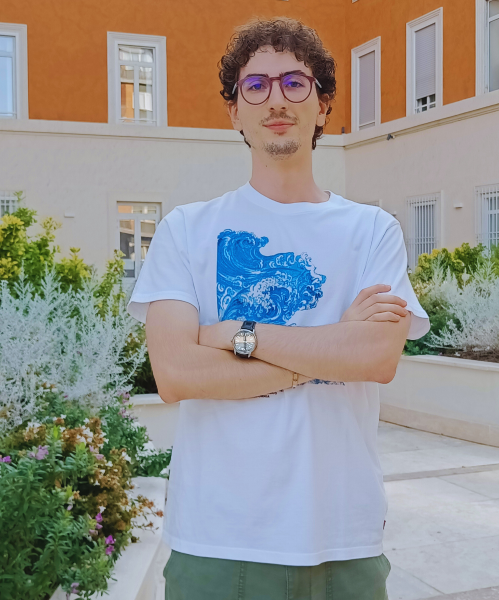

Kristjan Jurij Tarantelli
MSc in Artificial Intelligence and Robotics
Sapienza School of Advanced Studies

I'm a master's student in AI & Robotics at Sapienza University of Rome, where I was selected as the top student in the Sapienza School of Advanced Studies, and I currently hold a GPA of 29.75/30. I graduated summa cum laude (110/110) in Computer and Control Engineering.
On the robotics side, I followed courses by Alessandro De Luca and Giuseppe Oriolo, authors of Foundations of Robotics. For my master's thesis, I'm currently working with legged robots, specifically the Unitree G1, across two Sapienza labs: the RVP-Group under Prof. Giorgio Grisetti, focusing on perception and mapping, and the Robotics Lab of Prof. Oriolo, working on humanoid locomotion and control. I also collaborated with the ALCOR Lab under Prof. Irene Amerini, applying Vision Transformers to image anomaly detection on industrial datasets.
In parallel, I'm part of the Orthogonal School by the ELICSIR Foundation, a programme of excellence for top Italian CS students funded by Schmidt Sciences, where I'm currently working on approximate k-nearest neighbour algorithms. In previous years, I explored distributed systems (Chord, DHTs) and the conjectured optimality of SDP relaxations on Max-Cut.
On the other side, my path into cybersecurity started with CyberChallenge.IT, an intensive training programme in that ended with a national competition win against 42 universities. I later specialized in reverse engineering and hardware hacking, competing with Team Italy and mHackeroni at top global CTFs.
I now coordinate the CyberChallenge programme at Sapienza, having trained national champion teams in 2024 and 2025, and I also co-founded CyberBootcamp, a one-month hands-on security course with over 200 participants.
A snapshot of current projects and roles.
Active perception research at Sapienza's RVP-Group (perception & mapping, Prof. Grisetti) and Oriolo's Robotic Lab (humanoid locomotion & control).
Researching approximate k-nearest neighbour algorithms at the Orthogonal School, by ELICSIR Foundation, funded by Schmidt Sciences.
Coordinator at CyberChallenge.IT Sapienza, national champions 2024 & 2025. Co-founder of CyberBootcamp, a one-month security course with 200+ participants.